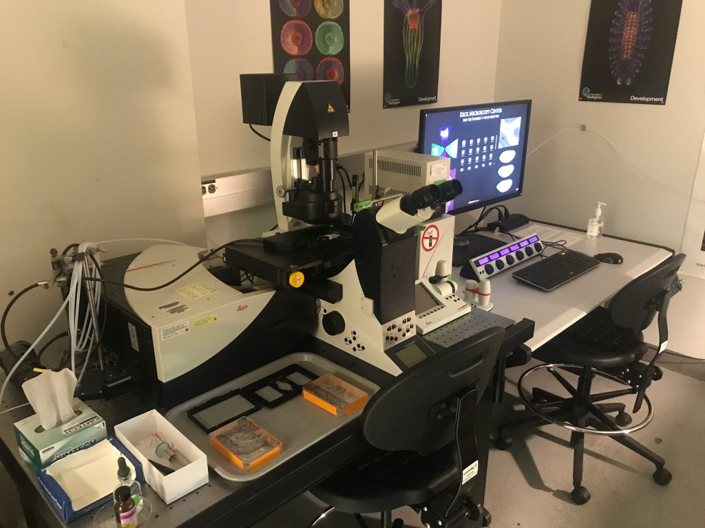
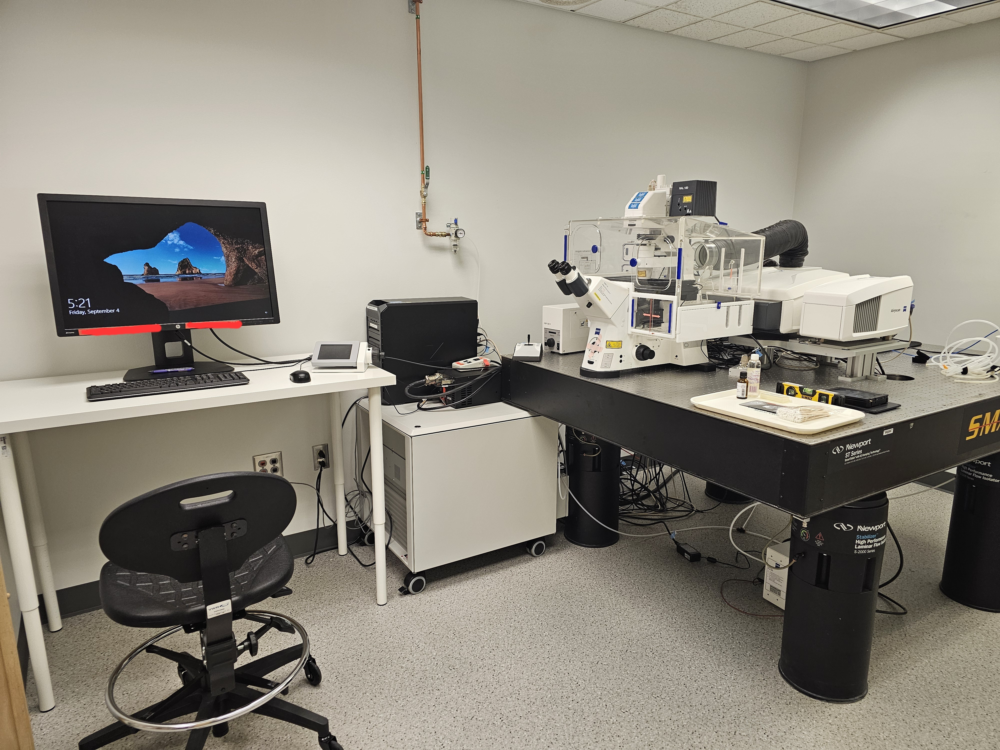
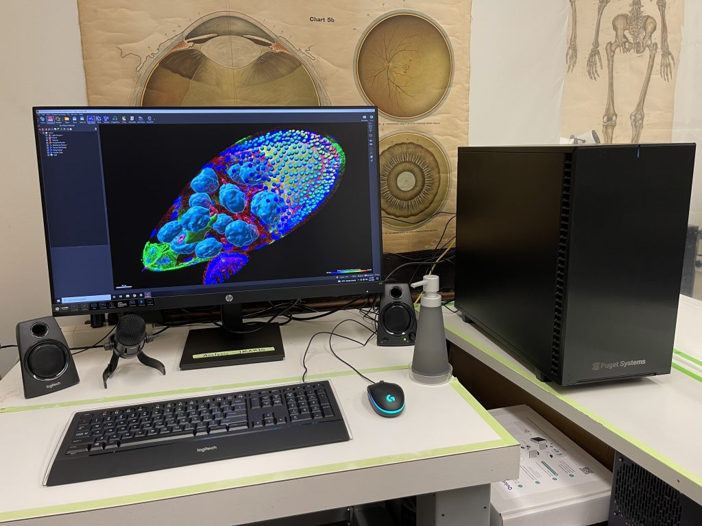

Microscopy platforms
Four complementary imaging systems covering confocal, widefield, and live-cell applications. All require advance reservation and completed training.

White light laser (470–670 nm), resonant scanner, HyD detectors, Lightning deconvolution. NIH-funded via S10 OD016240.
Specification Book time
32-channel GaAsP spectral detector for real-time linear unmixing of closely overlapping fluorophores.
Specification
Motorized stage for mosaic tiling, DIC optics, full fluorescence filter sets. Ideal for large-area and multi-point experiments.
Specification Specification Book time
Full-license 3D/4D suite on AMD Threadripper — surface rendering, spot detection, filament tracing, cell analysis. Free for UW students.
Specification Book time
Pecon stage-top incubator and Warner 35 mm dish incubator. Temperature, CO₂, and humidity control for long-term live-cell experiments.
Specification Book time